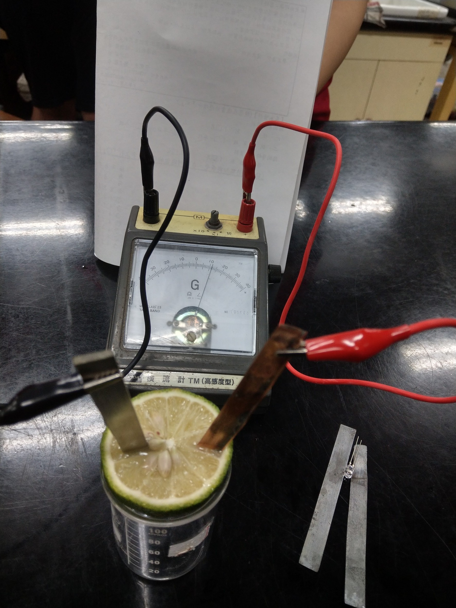
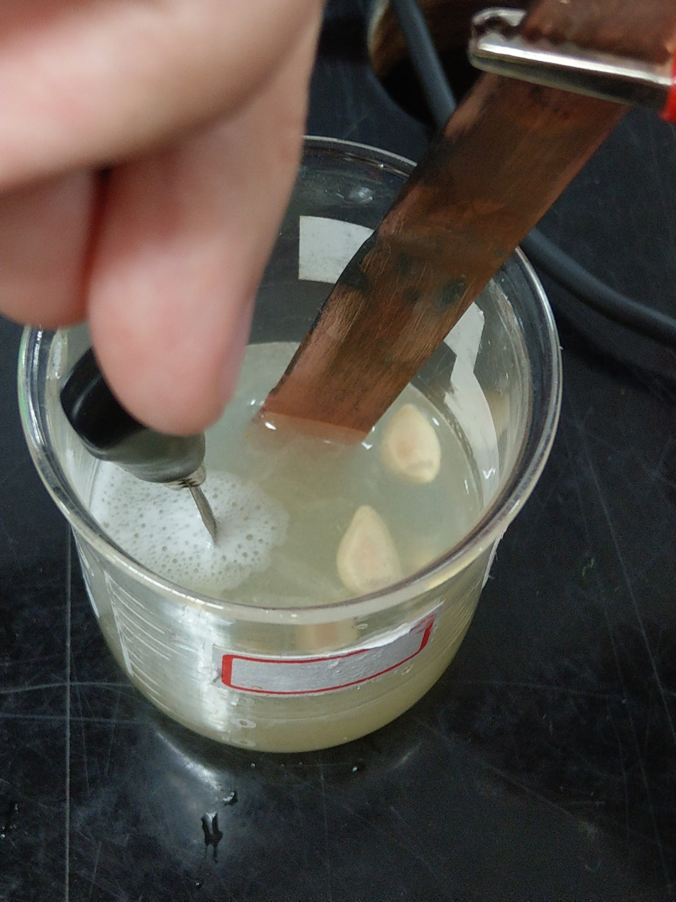

水果電池
實驗器材:
1.銅棒 2.鋅棒
3.鎳棒 4.鎂棒
5.鋁棒 6.鐵棒(迴紋針)
7.伏特計 8.燈泡
9.砂紙 10.水果
實驗步驟:
將兩兩不同的極棒當作正負極，並測量產生電壓。並試著調整兩極棒之間
的距離，其產生結果如下表。
實驗數據:
| 正極極棒 |
負極極棒 |
極棒間距離遠的電壓 |
極棒間距離近的電壓 |
燈泡亮暗 |
| Cu |
Zn |
0.45v |
0.9v |
暗 |
| Ni |
Zn |
0.35v |
0.45v |
暗 |
| Cu |
Ni |
0.1v |
0.15v |
暗 |
| Ni |
Mg |
0.6v |
0.85v |
暗 |
| Al |
Mg |
0.05 |
0.1 |
暗 |
| Cu |
Mg |
0.2 |
0.2 |
暗 |
| Zn |
Al |
0.1v |
0.1v |
暗 |
| Ni |
Fe |
0.19v |
0.21v |
暗 |
| Cu |
Fe |
0.25v |
0.4v |
暗 |
| Fe |
Zn |
0.26v |
0.39 |
暗 |
實驗心得及發現:
能看到所有燈泡皆不亮，這可能有兩個原因。
1.燈跑因其他原因而燒毀。
2.電壓不夠強，無法提供燈泡足夠的電力。
此外，我們還發現，以下事情。
1.活性差距越大的兩電極，其產生的電壓就越大。
2.在原本我們已經用砂紙擦乾淨的極棒，在做完實驗後，會在上面產生黑斑。且使用鎂帶
作為反應的極棒時，會在周圍產生持續許多氣泡。
3.通常迴紋針表面都會度上一層其他物質，以防其氧化，因此在做實驗時必須先用砂紙將
迴紋針表面的其他物質磨掉。否則將無法測得電壓或是產生的數據是錯誤的。
圖片:

